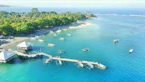
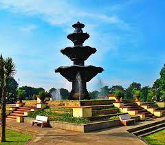
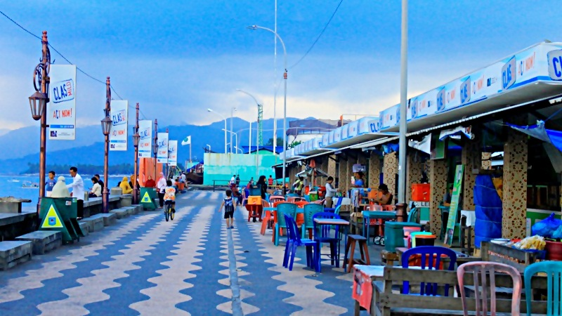

Jika anda berkunjung ke lombok dan membutuhkan traveling baik berupa sewa mobil, sewa kapal beserta penginapan dapat menghubungai email ochy22@gmail.com

Pantai Senggigi

Wisata Taman Sangkareang

Wisata Kuliner Pantai Ampenan
Pantai Senggigi adalah tempat pariwisata yang terkenal di Lombok. Letaknya di sebelah barat pesisir Pulau Lombok. Pantai Senggigi memang tidak sebesar Pantai Kuta di Bali, tetapi seketika kita berada di sini akan merasa seperti berada di Pantai Kuta, Bali. Memasuki area pantai Senggigi, wisatawan seta merta disapa oleh lembutnya angin semilir yang menenangkan. Pesisir pantainya masih asri, walaupun masih ada sampah dedaunan yang masih berserakan karena jarang dibersihkan. Pemandangan bawah lautnya sangat indah, dan wisatawan bisa melakukan selam permukaan (snorkeling) sepuasnya karena ombaknya tidak terlalu besar. Terumbu karangnya menjulang ketengah menyebabkan ombak besarnya pecah di tengah. Tersedia juga hotel-hotel dengan harga yang bervariasi, dari yang mahal sampai hotel yang berharga ekonomis..
Ampenan menjadi destinasi wisata andalan yang ada di Kota Mataram, NTB. Letaknya yang tak jauh dari pusat kota, membuat Pantai Ampenan tidak pernah sepi dari pengunjung.Selain menyaksikan keindahan matahari terbenam, pengunjung juga bisa menikmati sajian kuliner khas Lombok yang tersedia di Pantai Ampenan. Sejumlah sarana fasilitas pendukung wisata, seperti toilet, parkir kendaraan, hingga mushala tersedia..
Taman Sangkareang merupakan salah satu detinasi wisata menarik di wilayah Lombok. Teman Traveler bisa menemukan berbagai macam hiburan, mulai dari permainan anak-anak sampai hiburan orang dewasa. Beberapa sudutnya juga dipadati spot selfie. Penasaran dengan bagaimana keindahan dan serunya berjalan-jalan di Taman Sangkareang? Mari simak pengalaman kontributor Travelingyuk, Aziz Syahroni, berikut ini..